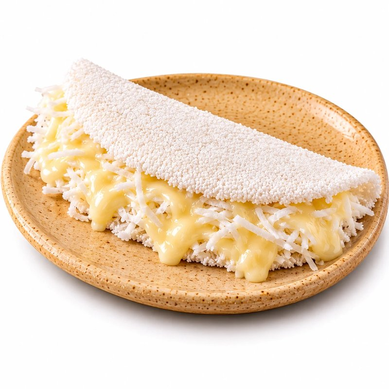
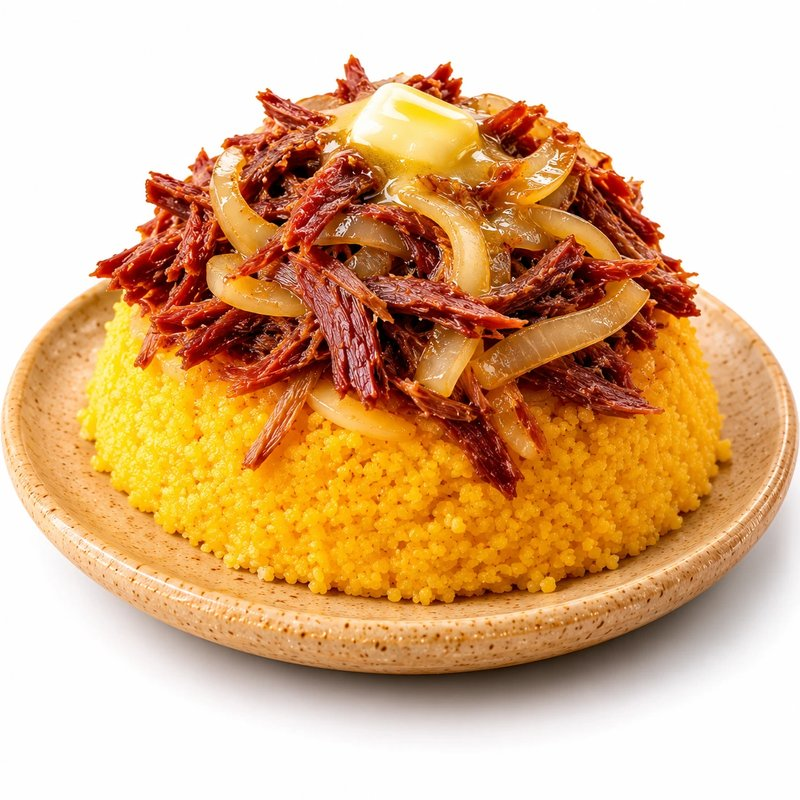
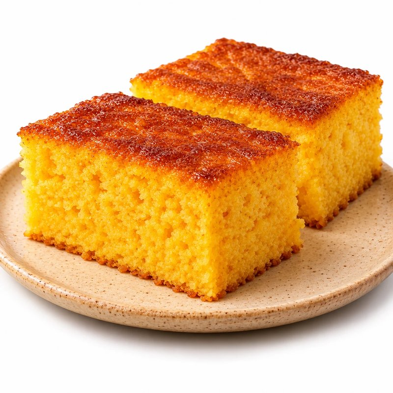
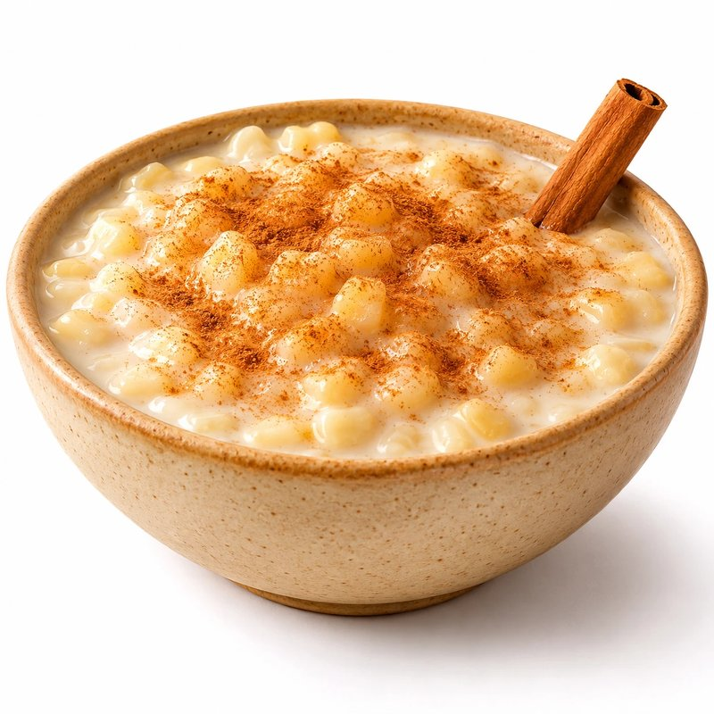
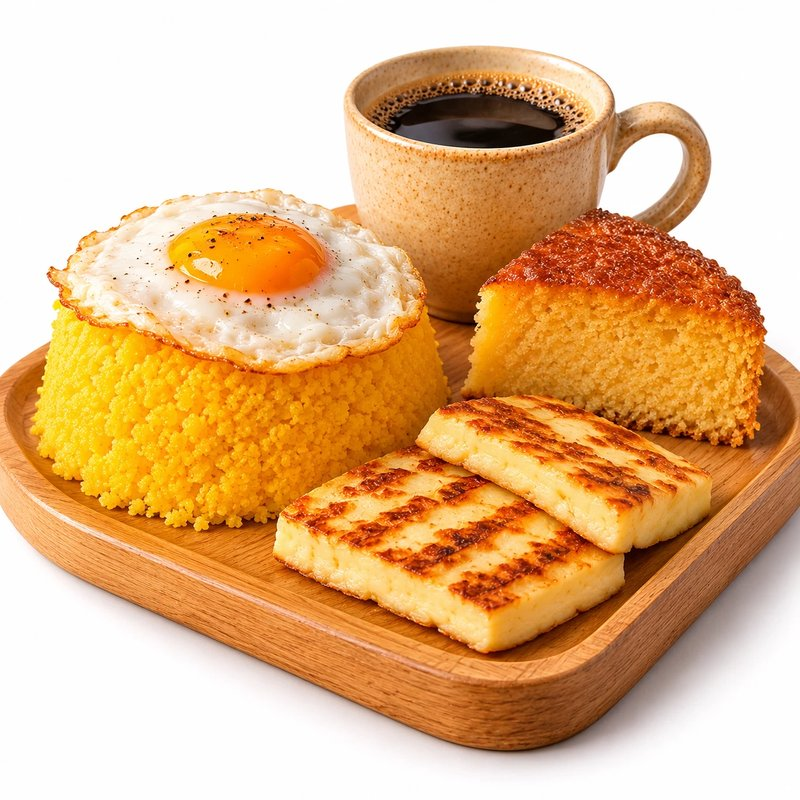

Identidade visual
Guia de marca e design system
Regras visuais e componentes usados em todos os canais: aplicativo, totem e site.
1. Conceito e logotipo
O símbolo mostra o sol do sertão nascendo sobre a terra , com raízes por baixo:
tradição (raízes) e o começo do dia (o café da manhã, principal momento de consumo da rede).
As cores vêm do barro, do sol, do mandacaru e do café. A tipografia com serifa traz o lado artesanal e
a fonte sem serifa garante leitura fácil em telas pequenas e no totem.
Área de respiro mínima: metade da altura do símbolo. Tamanho mínimo do símbolo: 32 px.
2. Cores
Terracota #B5502A
Sol #F2B544
Mandacaru #3E6B48
Café #2B1D14
Areia #FBF6EE
Borda #EBDFD0
Erro #B42318
Informação #2D5F8B
Todas as combinações de texto usadas passam no contraste mínimo AA da WCAG.
3. Tipografia
Fraunces 700 · 38 px · Título da página
Cuscuz quentinho
Fraunces 700 · 22 px · Título de seção
Promoções da semana
Fraunces 700 · 18 px · Título de cartão
Tapioca de carne de sol
DM Sans 400 · 16 px · Texto Peça pelo app, pelo totem ou pelo site e retire no balcão sem fila.
DM Sans 700 · 12 px · Sobretítulo Cardápio
4. Botões
Principal
Secundário
Destaque
Discreto
Perigo
Desabilitado
Pequeno
6. Selos e mensagens
Recebido
Em preparo
Pronto para retirada
Entregue
Cancelado
Sucesso: pagamento aprovado.
Erro: pagamento recusado pela operadora.
Aviso: aguardando o serviço de pagamento.
Informação: não guardamos dados do cartão.
7. Cartão de produto e status do pedido
Tapioca de carne de sol
Com queijo coalho.
R$ 18,90
Pamonha
Estado indisponível (fora da época).
R$ 9,00 Só em junho e julho
Recebido 2 Em preparo 3 Pronto para retirada 4 Entregue
8. Ícones e fotografia
Ícones com traço de 2 px e cantos arredondados. Fotos de estúdio com fundo branco puro, prato de cerâmica bege e luz vinda da esquerda.





9. Espaçamento, bordas e responsividade
Espaçamentos: múltiplos de 4 px (4, 8, 12, 16, 24, 32, 48).Bordas arredondadas: 8 px (pequeno), 12 px (campos e opções), 20 px (cartões) e botões em formato de pílula.Mobile-first: o CSS base é para celular; telas a partir de 640 px, 768 px e 960 px ganham mais colunas.Totem: fontes, botões e áreas de toque maiores (mínimo de 52 px) para uso em pé, com o dedo.Acessibilidade: foco visível em amarelo, contraste AA e animações desligadas para quem prefere menos movimento.